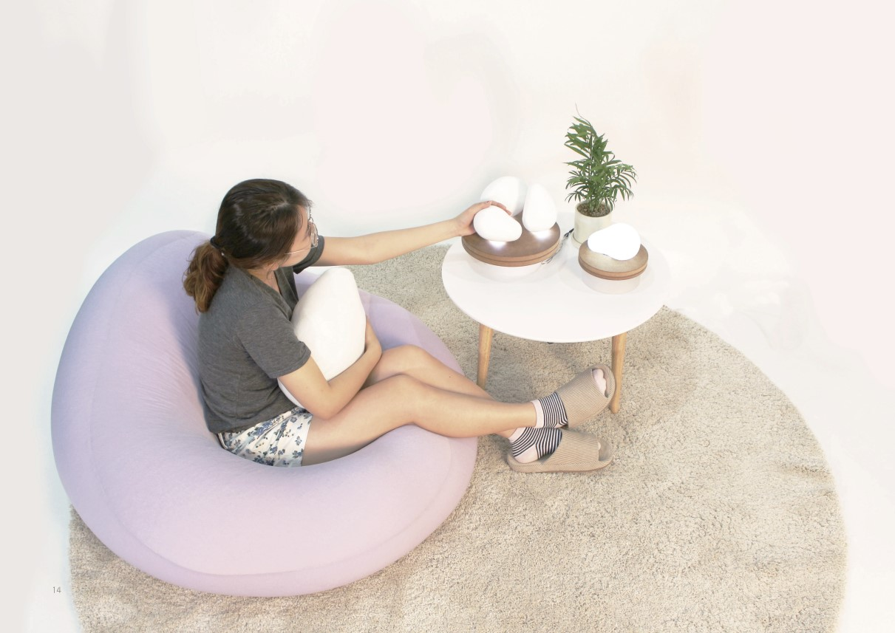

Yeo-un
Yeo-un is an interactive product designed to address the growing social issue of loneliness among single-person households in their 20s, a problem that can escalate to severe mental health challenges, including depression and, in extreme cases, suicidal ideation. Based on surveys and interviews, the project focuses on reducing loneliness by recreating the warmth and comfort of meaningful conversations and human connection.
Yeo-un offers an interactive experience that allows users to feel a sense of warmth and connection, even when returning to an empty, dark home. It is part of a comprehensive brand initiative that includes not just the product, but also related items like clothing and organizers, all designed to foster emotional well-being and community.
Impact: By combining interactive design with emotional engagement, Yeo-un helps reduce feelings of isolation, supports mental health, and creates an inviting atmosphere that fosters a sense of connection and warmth.

I led the design and prototyping process, conducting user interviews, creating 3D models, and testing prototypes to refine the product's functionality and usability. I collaborated with a diverse team to achieve the following:
Single-person households in their 20s
Integrated design including product, visual, fashion, and mobile app
3 months
Surveys and interviews revealed that single-person households in their 20s often experience loneliness after returning to an empty home. Users expressed a need for emotional support and a sense of warmth to combat feelings of isolation.
💡 Solution: Yeo-un provides interactive sensory features such as light, warmth, and sound to replicate the presence of loved ones, creating a comforting and supportive environment.
While users appreciate emotional support, many feel overwhelmed by direct conversations or perceived intrusions. A need emerged for subtle, non-intrusive ways to feel connected, such as sensory cues or symbolic gestures that don't demand immediate feedback.
💡 Solution: Yeo-un uses non-verbal communication through light, touch, and sound to create connections without causing pressure or intrusion.
Users valued experiences that engage multiple senses, such as sound, light, and warmth, to create a calming environment. These sensory elements are seen as effective ways to simulate human presence and care without verbal communication.
💡 Solution: Yeo-un integrates light, sound, and warmth in a seamless way to engage the senses, creating an immersive and comforting user experience.
Both users and their parents expressed the importance of simple and intuitive feedback systems. Users wanted a simple way to express gratitude, while parents desired a means to convey their thoughts and care for their children without overwhelming them.
💡 Solution: Yeo-un incorporates an intuitive touch or gesture-based feedback system, enabling users to express gratitude effortlessly while fostering reassurance for caregivers.
The stand-type Yeo-un is ideal for users who prioritize visual effects and prefer a sleek, casual experience. Users can switch between recording and playback modes using the icon slider at the top of the device. When a hand is waved over the device, it activates sound, light, and warmth playback (recorded mode). The device stops working when the hand is removed. Charging is wireless and starts by placing the device on the included charging pad.

Materials: Device - Polyethylene (132x96x88 mm), Charger - MDF (175x25 mm)
The cushion-type Yeo-un is designed for users who prefer tactile comfort. A switch on the side of the cushion allows users to toggle between recording and playback modes. Simply holding the device activates sound, light, and warmth playback (recorded mode). If there is no contact for 5 minutes, the device automatically stops. The cushion is crafted to provide a cozy, embracing sensation for single-person households, making users feel at ease while using it.
Materials: Device - Cotton (390x440 mm), Bean Bag - Cotton (1000x1600x800 mm)

We conducted surveys with 100 single-person households in their 20s experiencing loneliness, along with interviews involving five university students in their 20s, five parents, and related professors to gather insights.
Using Rhino for 3D modeling, we created multiple prototypes with a 3D printer. The prototypes were iteratively improved based on user feedback to refine the product’s functionality and aesthetics.